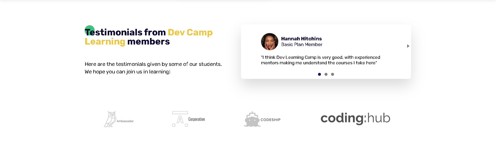

Dev Camp Learning
A fictional landing page for an online course platform specialising in Web Development. I had an idea of a landing page and I coded and designed it from scratch into a live website.

“I chose to build this landing page as it sums up what I have been doing recently, mainly learning to code websites from a variety of courses on the web!”
The task
My aim was to do a project from scratch totally on my own.
The project would include advanced CSS topics for layout and responsiveness and added Javascript for interactivity.
I wanted to see what the process was like to do a project from the beginning to the end.
What I did
To build the Dev Camp Learning landing page, this is what I did:
- 1. Planning – Who is this website for and its goals and target audience? How can this be accomplished through my development and design options?
- 2. Process – Sitemap of the landing page and decide which sections to include and what they should contain. Draw mockups of the key components of the site so you know how to use them in a layout pattern. How can we use Flexbox and CSS Grid to achieve the desired responsive layouts.
- 3. Similarities – Are there any reusable components or classes for color, buttons and back-ground or headings?
- 4. Development – Mobile first approach. Using resets and CSS variables, then set global styles, utility classes, typography and then the layouts for each individual component. Where needed Javascript is added for interactivity.
- 5. Production – Getting the Dev Camp Learning live on the internet via Netlify
Outcome

- 1. Valuable learning process – I learnt how to carefully design and plan a site before committing it to code. Learning to see how a site would flow responsively through my development decisions.
- 2. How to think about CSS in a new way – It gave me practice in how I think of a website in terms of components on a page and how CSS utility classes can help the overall structure and styles of these components.
- 3. Layout decisions – I would break each section down and decide if CSS Grid or Flexbox would be the best way to use for each component’s layout.
- 4. Troubleshooting cross-browser compatibility – This project also gave me a chance to learn more about making a site look seam less across all web browsers.
- 5. Github – I used Github on a daily basis to update any changes made to the project.